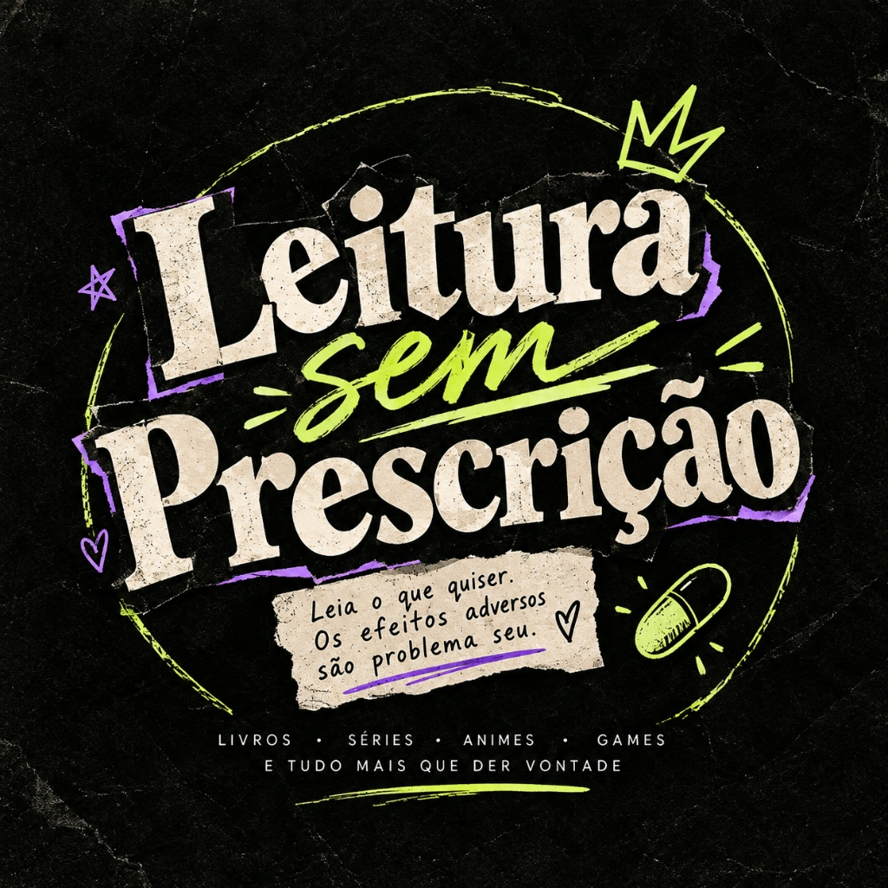

O encontro sem filtros entre literatura, cultura pop e vida real. Resenhas sinceras, surtos literários, indicações e opiniões de quem lê por pura paixão.
É sobre ler o que quiser, quando quiser e do jeito que quiser. Aqui não tem imposição de "só clássicos" nem filtro de superioridade intelectual.
sem regrasRir do caos, falar o que pensa e transformar as resenhas em uma conversa entre amigos na cafeteria. Opiniões sinceras e muita autenticidade.
zero filtroLivros se conectam com séries, animes, jogos e música. A literatura não vive isolada do mundo: ela é o combustível para as melhores discussões.
+ caos bom
Tenho 21 anos, sou estudante de Farmácia (daí a brincadeira com a "prescrição" e tarjas pretas!), apaixonada compulsiva por livros, animes, games, rock e tudo o que me faz rir ou surtar.
Criei o Leitura Sem Prescrição para ser o nosso refúgio. Se você também é do tipo que lê por impulso, acumula 5 mil livros na estante sem ler metade e tem zero disciplina, você tá exatamente no lugar certo!
Opiniões reais sobre o que funcionou, o que decepcionou e o que vale cada centavo.
Livros que deveriam vir com tarja preta e romances problemáticos que a gente ama julgar.
Séries, animes, jogos e comparações de adaptações com discussões descontraídas.
Memes de leitor, ressaca literária, rotina e o caos de comprar mais livros do que dá tempo de ler.
Qual é o seu sintoma hoje? Escolha o seu estado emocional e receba uma prescrição sem garantia de equilíbrio mental:
Descrição do tipo de leitura ideal para o seu sintoma de hoje.